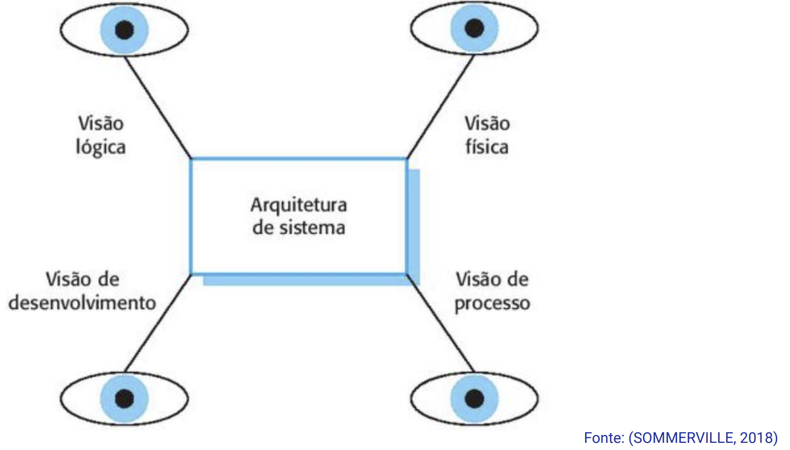

Disciplinas
TÉCNICAS AVANÇADAS DE DESENVOLVIMENTO DE SOFTWARE-T01-2024-2 Concluído
Materiais
Vídeo 1 - [UFMS Digital] Técnicas Avançadas de Desenvolvimento de Software - Módulo 2 - Unidade 1 - Fundamentos de Arquitetura de Software sendProf° ministrante: Luciano Édipo Pereira da Silva
Conteúdo
- Decisões de projeto e arquitetura
- Fundamentos da arquitetura de software
- Estilos arquiteturais comuns: MVC, REST, etc
- Visões de arquitetura
- Padrões de arquitetura e seu papel no desenvolvimento
- Vantagens e desvantagens de aplicar padrões de arquitetura
Decisões de projeto e arquitetura
- Organização para satisfazer:
- RF - Requisitos Funcionais
- RNF - Requisitos Não Funcionais
- Projeto de Arquitetura como série e Decisões: Estruturais
- Fortemente ligado aos RNFs:
- Desempenho
- Segurança (Dados/Processos)
- Disponibilidade
- Manutenibilidade
Fundamentos da arquitetura de software: Por quê?
- Modularização/Componentização/Divisão
- Manutenção/Testabilidade
- Reusabilidade
- Escalabilidade
- Gerenciamento da Complexidade
- Colaboração
- Padronização e Adaptabilidade
Fundamentos da arquitetura de software: Princípios
- Modularização
- Separação das Responsabilidades
- Abstração
- Encapsulamento
- Reusabilidade
- Flexibilidade e Extensibilidade
- Desacoplamento
- Padrão de Design
Estilos arquiteturais mais comuns
- REST (Representational State Transfer)
- SOAP (Simple Object Access Protocol)
- Arquiteturas em Camadas** (N-tipos)
- Arquitetura Orientada a Serviços (SOA)
- Arquitetura Cliente-Servidor
- Arquitetura Baseada em Eventos
- … MVC, Microsserviços
Visões de arquitetura

Padrões de arquitetura e seu papel no desenvolvimento
- Padrão:
- Soluções comprovadas
- Reusabilidade
- Comunicação Efetiva
- Melhores práticas
- Flexibilidade e Escalabilidade
- Abstração
- Documentação, …
Vantagens de aplicar padrões de arquitetura
- Reusabilidade
- Padronização
- Melhores práticas -> Facilidade de Evolução, Tecnologias Emergentes e Redução de Riscos
- Comunicação Efetiva -> Facilidade de Compreensão
Desvantagens de aplicar padrões de arquitetura
- Rigidez
- Complexidade inicial
- Curva de aprendizado
- Incompatibilidade com Requisitos específicos
- Desacoplamento exagerado
- Limitações -> Tecnologia, Custo, Resistência Humana
- Atualização e Evolução
Estudo de caso: TaskHub
Desenvolva um sistema web simples para gerenciamento de tarefas:
- Adicione usuário e atrele as tarefas.
- Separe a lógica de manipulação de dados e regras de negócios pensando no lado servidor.
- Separe a lógica de apresentação usando um mecanismo de template, podendo utilizar outros front-ends pensando no lado cliente.